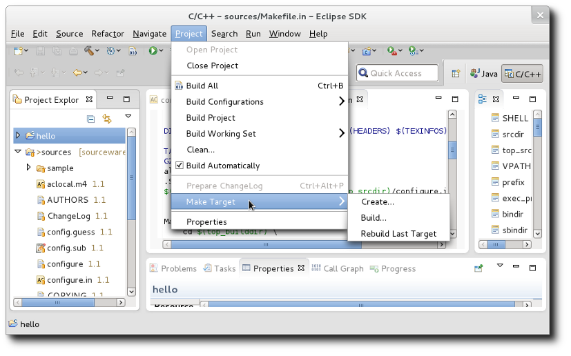
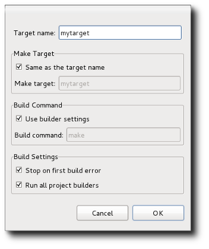
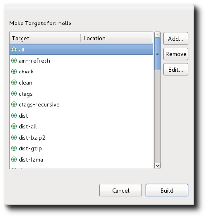
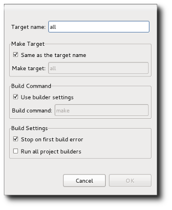

| Make Targets | ||
|---|---|---|
|
|
|
|
| Building | Updating This Document | |
A Makefile has a set of targets that can be built. Typically, every Makefile has an all target which builds all targets, but there may be optional targets as well. A CDT Makefile project enables one to invoke the various make targets via the Make Targets dialog. Since an Autotools project is a form of Makefile project, it too supports the Make Targets dialog. Make Targets are important for an Autotool project because there are a large number of make targets added to the Makefile automatically by configuration. Typically, a project is built by running make all, but it is installed by invoking make install. The install target places files in standard locations; usually system directories on a Linux system. For example, header files would be installed in /usr/include and made available to all users of the system. The install prefix (/usr) can be overridden using the configure --prefix parameter or else by specifying prefix=xxxx on the call to make (e.g. make install prefix=/my/local/directory) so that testing can be performed without modifying the whole system.
A regular CDT Makefile project requires users to add their own Make Targets, however, the Autotools plug-in analyzes the top-level Makefile for you and creates top-level Make Targets for the project. As mentioned, these automatically added targets can be numerous. If you wish to create targets to run in sub-directories of the main build directory, you must add these manually. For example, you might wish to build docs in a lower-level sub-directory, but not for the entire project.
The Make Targets dialog can be displayed in two ways:
This brings up a sub-menu containing Create... and Build.... to either create a new Make Target or build an existing Make Target, respectively.

Creating a Make Target is relatively straight-forward:

There is nothing different in the Make Target dialog for Autotools, however, a few concepts need to be clarified.
For Make Targets added as part of the Project -> Make Target menu item, the target is for the top-level Makefile for the current build. This means that if you add a Make Target this way, it will persist across configurations and will try and run the make command in the top-level build location specified for the active configuration.
Make Targets added by using the right-click Make Target menu are location sensitive. This means that the make command will attempt to run in that directory where the right-click was performed, regardless of whether there is a Makefile present there. Let's say you want to add your own Make Target that performed a make all install (i.e. you want to group multiple targets together into one). If you are in configuration X with build directory build-X, you want to right-click in a directory that is build-X or a sub-directory of build-X. This target will issue a make all install in that particular directory. If you wanted the same target for another configuration, you would have to right-click in its build directory or lower and add another Make Target. Obviously, for top-level Make Targets, using the Project -> Make Target menu item makes the most sense since it applies to all configurations. If you add a Make Target to a source directory, it will likely fail when run because it will try and run make in that directory which will probably only contain a Makefile.in or Makefile.am file and not a Makefile which is only generated at configure time.
The Make Target dialog can be used to override various flags within the Makefile. For example, to perform a make install and reset the prefix to /my/local/directory, you would first select the install target from the Build... dialog.

Then, you would click the Edit button to edit the Make Target. You can then override the prefix by specifying its value after the make command. You edit the build command by first un-checking "Use Builder Settings" which enables text entry.

The check-box that says "Run all project builders" should be left un-checked. By default, we only want the CDT Makefile builder to run and not the Autotools configure builder or any other builder.
|
|

|
|
| Building | Updating This Document |